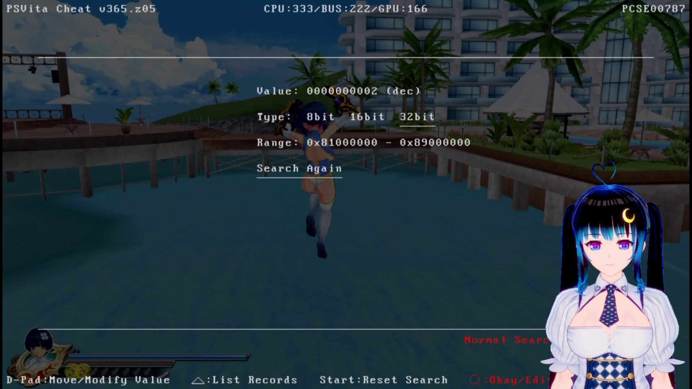
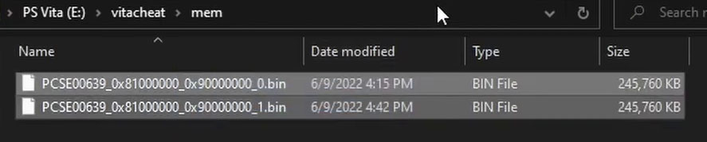
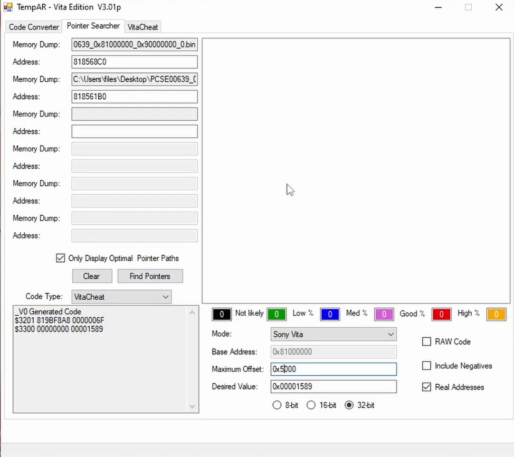

Trucos para PSVita
Activar Trucos en Juegos para PSVITA con un solo plugin en nuestra consola.

Para esta Guia
Requisitos para este tutorial
Programas para este Tutorial
Archivos Para descargar
| Archivos | Servidores | |
|---|---|---|
| AutoPlugin2 | Mega | |
| TempAR – Vita | Mega | |
| WEB Oficial | github.com | |
Empezando este Tutorial
- Si no tenemos el Plugin instalado podemos descargarlo e instalarlo revisar el tutorial AutoPlugin2
- El plugins Vitacheat by FinalCheat
- Una ves listo vamos a donde se instalo
- Abrimos VitaShell y buscamos la siguiente ruta
Ux0:vitacheat/db/en esta ubicación esta la base de datos- Si abrimos algunos de estos nos mostrar la información
- Para acceder
- Solo demos abrir un juego de PSVita y presionar +

- Nos aparecerá un menú como este
- GO SEARCH: para buscar nuevo cheat para nuesta PSVita
- CHEAT LIST: una lista de los trucos disponibles para nuestro juego abierto
- Para activar algunos trucos solo con
 en cada unos de la lista
en cada unos de la lista - Y para desactivar el mismo
- Una ves listo presionamos
 para salir
para salir - Para Crear nuevos Trucos
- Estos cheats funcionan mientras tengamos el juego abierto
- Solo demos abrir un juego de PSVita y presionar +
- Nos aparecerá un menú como este
- Y elegimos la opción GO SEARCH y le damos a
- Adentro en value buscamos la cantidad y después le damos a Firest Search
- Y empezar a buscar el valor y después nos mostrar los resultados
- Volvemos al juego para aumentar o disminuir la cantidad que estamos buscando
- Y volvemos a abrir para buscar el nuevo valor 
- Ahora encontrara menos valores como ej 15
- Podemos probar con otro valor mas si toda son muchos valores
- Ahora tenemos 6 resultados en la búsqueda
- Ahora que tenemos muchos menos valores le damos al
 en List Records y nos muestra una lista de los valores encontrados
en List Records y nos muestra una lista de los valores encontrados - En esta lista le damos al botón
 para ir agregando a la lista de cheat a cada valor encontrado
para ir agregando a la lista de cheat a cada valor encontrado - Nos volvemos hacia atrás y vamos al menú CHEAT LIST
- Ahora solo vamos probando cada cheat hasta encontrar el que nos mantenga el valor en el juego para ir activando le damos al
- Si no funciona volvemos al menú y activamos otro hasta encontrar el que mantenga el valor
- Cuando encontramos podemos borrar los demos cheat para esto presionamos el botón
 y luego con cada uno
y luego con cada uno - Si queremos cambiar el valor del cheat encontrado le damos al encima del cheat
- En este menú podemos cambiar el nombre y el valor
- Bajamos al código y lo cambiamos por otro valor si el valor encontrado esta diferente a hex podemos cambiarlo con para menor entendimiento del código
- Este cheat solo serve mientras estemos en el juego, pero si lo cerramos y lo abrimos de nuevo puede ser que no funcione
- Para exportar los trucos encontrados podemos darle a
 + y se nos exporta a nombre.psv
+ y se nos exporta a nombre.psv - Si no lo guardamos perdemos la lista de trucos encontrada
- Para Crear Trucos Estáticos
- En nuestra consola PSVita
- Para esto abrimos un juego para buscar los valores para barras de vida, por ejemplo
- Para esto buscamos el valor sin saber el valor para esto vamos a GO SEARCH y le damos a para darle a Fuzzy Search
- Para obtener mejor presión podemos colocar el Range en 0x90000000
- Y después le damos a First Search para empezar la primera busque
- Regresamos al juego y cambiamos el valor que estamos buscando y volvemos a hacer una búsqueda
- Y le damos a Search Again y esperamos los resultados esta segunda búsqueda pueda tardar mas tiempo
- Si el valor sube en ves de disminuir podemos colocar en Search Type por el símbolo correspondiente
- Y repetimos los pasos a tener algunos códigos como para este ejemplo encontramos 12
- Y lo vamos agregando a la lita de cheat para esto le damos a y después nos vamos al menú Cheat List
- Ahora vamos a ir activando uno a uno hasta encontrar el valor que no cambien en el juego como ejemplo la barra de vida
- Cuando encontremos el valor que se mantenga podemos cambiar el valor para esto seleccionamos el cheat y le cambiamos el valor para mejor manejo lo dejamos en dec para mejor entendimiento
- Y podemos eliminar todos los demás y solo dejamos solo el que encontramos
- Ahora anotamos los códigos en el pc en un block de nota
- Una ves tomado todos los apuntes, regresamos y activamos el cheat y buscamos en el menú principal CROSS-MEMORY
- Y le damos a la primera opción EXPORT MEMORY SAFE MODE
- Una vez dentro cambiamos el valor de la derecha por el mismo rango de valor que buscamos anteriormente 0x90000000
- Cuando terminemos con los cambios le damos a para que empiece el proceso nos compilara toda la información que emos trabajado solo queda esperar a que termine
- Una vez terminada la recopilación de información pendremos que hacer una nueva búsqueda del valor para esto cerramos el juego y lo volvemos abrir y volvemos a repetir los pasos
- Una ves terminado tendremos los dos datos anotados y compilados de la memoria
- Salimos del juego y en menú principal de la VITA buscamos la app VitaShell y la abrimos para conectarla al pc para sacar los archivos
- La ubicación pasa los archivos son por USB
vitacheat/memy por FTPux0:vitacheat/memy los copiamos a nuestra computadora los 2 archivos .bin

- En nuestra Computadora
- Con los 2 archivos copiados abrimos el programa TempAR
- En la Primera opción del programa Memory Dump 1: buscamos el primer archivo que sacamos de nuestra consola terminado en 0.0.bin
- Y en el siguiente dato Address 1: copiamos el código q guardamos anterior mente
- Y repetimos con el segundo archivo 0.1.bin y dato que teníamos guardado y podemos cambiar el valor Desired Value: por algún valor que anotamos y le damos al botón Find Pointers
- Nos mostrara muchos valores si nos aparecen valores en verde estamos bien, pero si queremos ampliar el rango le damos al botón Clear y después le cambiamos el valor en Maximum Offset por 0x5000 y le damos al botón Find Pointers 
- Una ves cargado por cada código en verde seleccionamos uno y nos mostrara el código para colocar en nuestra PSVita
- Abrimos el juego en nuestra PSVita y colocamos los trucos de la misma forma que nos muestra
- Antes podemos guardar la lista de trucos para esto le damos la y nos pregunta si queremos guardar y le damos a para confirmar
- Le damos a salir y probamos si nos sigue bajando, si no funciona le colocamos otro cheat de los verdes hasta encontrar el correcto
- Cuando encontremos el valor podemos cambar el valor para obtener el valor máximo
- Para saber si esta correcto el valor podemos cerrar el juego y volverlo a abrir y vamos a tener el valor igual por ejemplo en la vida
- Y listo


×